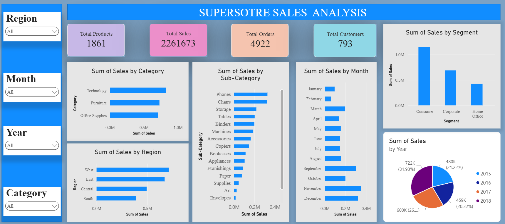

DATA ANALYTICS PROJECT
Superstore Sales Analysis
Analyzed retail sales data to understand sales trends, category performance and top-performing products using Excel, Python and Power BI.
Project Overview
This project focuses on analyzing Superstore sales data to discover meaningful business insights. I used Excel for initial analysis, Python for data analysis and Power BI to build an interactive dashboard.
Project Objectives
- Analyze total sales across different regions.
- Compare sales across product categories.
- Identify top-performing products.
- Understand monthly and yearly sales trends.
- Present insights using charts and dashboards.
Dataset Information
The dataset contains retail order information, including order dates, customer details, regions, product categories and sales values.
9,801
Rows
Sales
Primary Metric
4
Regions
Tools & Technologies
Microsoft Excel
Data exploration, PivotTables and sales summaries.
Python & Pandas
Data processing, grouping and sales analysis.
Power BI
Interactive dashboard and sales visualizations.
Key Analysis
- Compared sales across regions and categories.
- Analyzed monthly and yearly sales patterns.
- Identified products with high sales values.
Project Dashboard

Explore the Project
Visit my GitHub profile to explore my data analytics work.
View on GitHub ↗